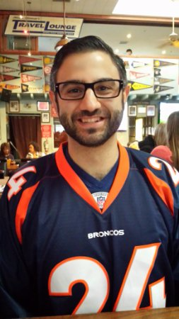

About Me
I am an effective senior business consultant with over 6+ years of proven success in setting strategy for targeted projects and implementing them in an effective manner. Driven to develop and lead projects that surpass corporate goals based on: (1) a deep understanding of customer needs and preferences, (2) having meaningful dialogue between the business and its clients, and (3) optimizing resources. Data-and-people-driven leader with a proven record of building trust and pushing boundaries, with an eye on bottom line results.
I am currently learning enrolled in a coding bootcamp to learn about programming and all of the different applications. I am excited about the opportunity to use programming to look at raw data as it is created instead of just the end result. Being able to analyze multiple forms of data and putting them together in a recognizable format offers the chance for me to solve challenging problems, something I enjoy doing often. Programming also allows me to express my creative side.
I am avid sports fan. I enjoying playing and watching most sports. I do have teams that I support but in general I am a fan of the game. I also have a strong interest in the video game industry. I love my Playstation 4 console but I am a fan of all systems.